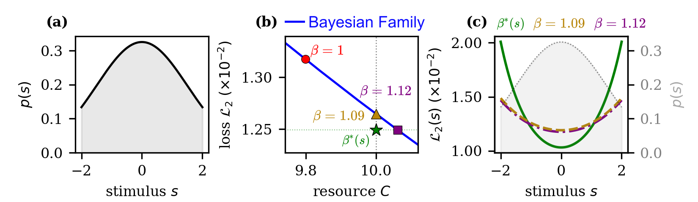

Abstract
Bayesian estimation has long been used to study both continuous estimation and discrete associative memory, but how encoding precision and memory retrieval should be jointly optimized remains unclear. We introduce precision-aware Hopfield retrieval, a framework that uses the encoder’s Fisher information to quantify encoding precision and incorporates it directly into the decoder of memory retrieval. Four results follow. First, optimal encoder-decoder information is shaped only by the prior, across Lp loss functions. Second, the optimal information follows a general coupling law across Lp loss functions. Third, optimal precision-aware Hopfield retrieval uses a stimulus-dependent inverse temperature. It outperforms the encoder-blind Bayesian decoder on both retrieval loss and required coding resource. Last, the framework yields a closed-form expression for memory recall bias. It reproduces central-tendency and cognitive-load effects observed in cognitive psychology. These effects emerge only when the encoder and decoder are modeled jointly.
Experiments

Discussion
Connection to diffusion models. Memory retrieval can be viewed as denoising. Let b(s) be the mean shift from the stimulus s to the retrieved value s̄. At leading order, the recall variance is Var(s̄ | s) ≈ 1/γ(s), which gives
The left side is the score of the memory density: the derivative of its logarithm. The relation connects the mean denoising shift, divided by the noise variance, to score estimation. Score-based diffusion models learn such denoising directions across a range of noise levels.
This suggests a connection between memory retrieval and generation: the score of the memory density could serve as a signal for generative modeling. The paper presents this as a heuristic connection and a direction for future work.